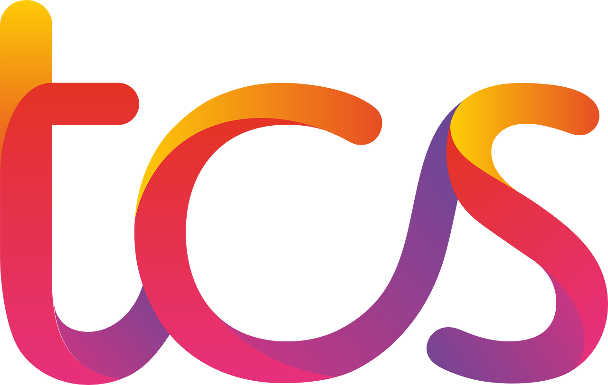

Ankur Varshney
Senior BI & Data Analytics Consultant
Helping organizations unlock measurable business value through Tableau, Cloud Data Platforms and AI-assisted Analytics.
11+ years delivering enterprise analytics across insurance, banking, aviation, manufacturing & energy, automating reporting, improving governance, and driving better decisions.
11+ Years
6 Industries
Enterprise BI
Cloud Analytics
Companies
Sun Life Financial
Deutsche Bank
HCLTech

TCS First Abu Dhabi Bank GE Power Singapore Airlines Sun Life Financial Deutsche Bank HCLTech TCS First Abu Dhabi Bank GE Power Singapore Airlines11+
Years Exp
BI & Data Analytics
120+
Dashboards
Designed & Certified
AWS
Cloud BI
S3, Athena & Glue
AI/BI
Extensions
Bedrock & TabPy Extensions
SQL
Optimization
Procedures & Views Tuning
PySpark
Databricks
Large Scale Data Prep
RLS
Security
Entitlements Row Security
30%
Adoption Up
Sun Life Platform Adoption
SQL Performance Tuning✦Generative AI for BI✦Python✦Data Viz Architect✦AWS Cloud Analytics✦Tableau Consultant✦
Impact
Delivering measurable business outcomes.
Concrete values delivered across assignments using modern data engineering and visualization methods.
95% Effort Saved
Automated complex reporting workflows, reducing manual efforts in compliance and master data teams.
90% Latency Cut
Optimized legacy PL/SQL procedures and database views to accelerate report generation pipelines.
USD 50K Saved
Optimized views and pre-aggregated tables during massive legacy-to-AWS cloud data migrations.
30% Adoption Up
Built dedicated usage adoption suites used extensively by VPs and POs to monitor BI engagement.
35% Load Speedup
Tuned Tableau performance via context filtering, index pushdowns, and LOD refactoring.
100% Security Enforced
Designed entitlement-based dynamic row-level security restricting sensitive financial records.
20% CSAT Growth
Developed client feedback journey maps linking Salesforce, Qualtrics, and social data streams.
Global Footprint
Delivered enterprise reporting solutions across Singapore, Germany, UK, UAE, and India.
Expertise
Industries Served
Over 11+ years of consulting, delivering domain-specific analytics solutions tailored to sector challenges.
Insurance
Sun Life Financial: Built executive BI dashboards, Qualtrics/Salesforce CSAT journey maps, Tableau Server administration, and AWS Bedrock/TabPy AI extensions.
Banking & Financial Services
First Abu Dhabi Bank & Deutsche Bank: Designed entitlement-based Row-Level Security (RLS) for HR compensation reporting, and built 5-year budgeting dashboard suites for CXOs.
Manufacturing
GE Power: Automated defect tracking and CAS compliance reporting (saving 95% effort), implemented Python fuzzy deduplication, and optimized lead-time tracking.
Aviation
Singapore Airlines (SIA): Delivered operational reporting, flight telemetry, and cargo analytics dashboards supporting flight operations and ground services.
Energy & Power
GE Power: Created load utilization models, compliance reporting dashboards, and turbine operational performance tracking.
Supply Chain Management
Optimized vendor procurement cycles, shipping lead times, and inventory tracking databases across enterprise supply chains.
IT Consulting
TCS & HCL Technologies: Led cross-functional BI teams delivering Tableau, Oracle SQL, SAP HANA, and PySpark data pipelines across UK, Germany, UAE, Singapore, and India.
Projects
Enterprise-grade case studies.
Tableau + AI
→
Agentic Conversational BI Extension
⚡ 95% manual query wait reduction
Tableau dashboard extension utilizing AWS Bedrock (Claude) and custom SageMaker embedding endpoints to run conversational data analytics.
LangChain
Bedrock
TabPy
Python
Tableau + Security
→
Workbook Sentinel
⚡ Local-first XML schema audit
A local-first, zero-data-leakage Tableau Dashboard Extension performing in-memory XML schema structure audits and calculated field lineage tracking.
JavaScript
DOMParser
fflate Zip
Extensions SDK
Tableau Extensions
→
Tableau Calendar Extension
⚡ Intuitive circular date picker filtering
Native full-year circular heatmap date picker built with React, TypeScript, and Vite on the Extensions API to drive interactive, two-way filters.
Extensions API
TypeScript
React
Vite
CSS Grid
AWS Cloud BI
→
AWS Athena & S3 Reporting Pipeline
⚡ Sub-3s load time & saved $50K
Engineered high-performance queries and structures connecting Tableau live to AWS S3 data lakes using Athena as the engine.
Athena
AWS S3
Glue Catalog
Parquet
BI Admin
→
Tableau Server Repository Analytics
⚡ Audited workbook usage & security
Direct query analytics dashboard of Tableau Server PostgreSQL repository tracking workbook usage and user security logs.
PostgreSQL
Server Admin
SQL
Auditing
BI DevOps
→
Automated Python Reporting Framework
⚡ Automated deployments & extract cleanup
Custom CLI scripts to automate workbook deployments, schedule updates, and clean Tableau extracts using Python TSC APIs.
Python
REST API
TSC API
DevOps
BI Security
→
Secure HR Analytics (FAB Bank)
⚡ Entitlement-based dynamic RLS
Interactive HR metrics dashboard for FAB featuring entitlement-based row level security (RLS) policies mapping department managers.
Oracle SQL
Row Level Security
LOD
PL/SQL
Supply Chain
→
GE Power Lead Time Analytics
⚡ Optimized supplier lead time workflows
Supplier logistics lead time tracking pipeline with pre-aggregated SQL snapshot tables and alert parameters in Talend.
Talend ETL
Oracle SQL
Tableau
Tuning
Data Quality
→
Python Fuzzy Deduplication
⚡ Automated vendor name data cleansing
Automated vendor name data cleansing script using Jaro-Winkler string similarity metrics and Union-Find records grouping.
Python
Pandas
String Distance
Algorithms
Analytics Engineering
→
International Analytics Job Pipeline
⚡ Visa sponsor relevance-scoring pipeline
End-to-end Python pipeline extracting, parsing, relevance-scoring, and exporting visa sponsoring analytics job postings.
Python Scrapy
Regex Parsing
Scoring Model
Pandas
Featured Insights
Analytics & engineering insights.
Sharing experiences on BI architecture, SQL performance, and AI extensions.
Bringing Python Into Tableau: A Practical Guide to TabPy Integration
A practical guide to connecting Tableau Desktop and Server to Python via TabPy, covering SCRIPT_* calculations, deployed endpoints, fuzzy matching, and production container topologies.
Querying the Tableau Server Repository: A Practical Guide to PostgreSQL Metadata
How to pull governance-grade answers (permissions, view activity, RLS coverage) straight from Tableau's own repository database, without relying on the Metadata API.
AI in Tableau: Connecting Amazon Bedrock and LangChain Agents via TabPy
Integrate Amazon Bedrock foundation models and LangChain agents natively into Tableau worksheets and dashboards using TabPy calculated scripts.
Knowledge Hub
Knowledge Hub.
Sharing practical lessons from enterprise analytics, Tableau, SQL, AWS, AI and Analytics Engineering.
Experience
Journey so far.
11+ Years
Enterprise BI & Cloud Analytics Leadership
6 Regions
US, UK, Germany, UAE, Singapore & India
7 Leaders
Sun Life, FAB Bank, Deutsche, GE Power, SIA
GenAI BI
AWS Bedrock, TabPy & React Extensions
Career Progression & Leadership Milestones
2023 - Present
Sun Life Financial
Senior BI Developer / Data Analyst
🏥 Insurance & Wealth Analytics
2021 - 2023
HCL Technologies
Tableau & Data Viz Lead
🏦 Deutsche Bank Financial Suite
2015 - 2021
Tata Consultancy Services
Senior BI Developer / IT Analyst
🏦 FAB Bank · ⚡ GE Power · ✈️ SIA
Sun Life Financial
Senior BI Developer / Data Analyst
Sun Life's analytics team serves hundreds of users across multiple business units. The challenge was scaling from ad-hoc reporting to a governed analytics platform.
Key Responsibilities
- Develop analytical models for Insurance, HNW, Attrition, and Product Performance dashboards.
- Integrate AWS S3 and Athena data lakes to live-connected Tableau views.
- Build Tableau dashboard extensions using LangChain and OpenAI models for Conversational BI.
- Manage Tableau Cloud permissions, schedule automations, and release pipelines.
Achievements
30% Adoption Increase
Designed an enterprise insurance analytics adoption suite used by VPs and POs.
20% CSAT Growth
Modeled client feedback loops by combining Qualtrics, Salesforce, and social data streams.
Key Projects
Enterprise Insurance Analytics Platform
Tableau Cloud
AWS Athena
S3
Agentic Conversational BI Extension
LangChain
OpenAI
TabPy
Customer Satisfaction Analytics
Qualtrics
Salesforce
Tableau
Tableau Server Administration
Tableau Server
PostgreSQL
REST API
HCL Technologies
Tableau & Data Viz Lead / Developer
Deutsche Bank's compliance and financial planning teams needed consolidated spend dashboards with strict data access controls across departments.
Key Responsibilities
- Led a team of 2 developers delivering compliance and budget analysis dashboards for Deutsche Bank.
- Engineered Databricks/PySpark ETL workflows to prepare massive reporting tables.
- Connected Tableau live to SAP HANA views for high-frequency analytical queries.
- Applied dynamic row-level security to restrict sensitive ESG investment records.
Achievements
Deutsche Bank Spend Suite
Delivered a 5-year financial planning and budgeting dashboard suite for senior leadership.
High-Performance Live Connection
Configured sub-second queries by connecting Tableau live to optimized SAP HANA views.
Key Projects
Deutsche Bank Financial Planning Suite
Tableau Desktop
SAP HANA
SQL
ESG Compliance Dashboards
Databricks
PySpark
Tableau
Tata Consultancy Services
IT Analyst (Senior BI Developer)
Across 6 years and multi-geography engagements, the focus shifted from individual dashboard delivery to leading a team of 5 developers across Banking, Aviation, and Supply Chain.
Key Responsibilities
- Led a team of 5 BI developers delivering analytics across Banking, Aviation, and Supply Chain domains.
- Built Oracle SQL PL/SQL procedures, Talend ETL snapshots, and Greenplum query structures.
- Designed compensation analytics for First Abu Dhabi Bank (FAB) featuring dynamic user-entitlements row security.
Achievements
95% Effort Saved (GE Power)
Automated defect tracking queries during legacy-to-AWS cloud migration.
35% Load Speedup (GE Power)
Optimized supply chain lead-time dashboards via SQL refactoring and parameter tuning.
Key Projects
HR Analytics & Risk Reporting - FAB Bank
Tableau
Oracle SQL
PL/SQL
Master Data Governance - GE Power
Tableau Prep
Greenplum
Aurora DB
CAS Compliance Assessment - GE Power
Tableau
Oracle SQL
Python
Supply Chain Lead Time Analytics - GE Power
Tableau
Talend ETL
Oracle SQL
Skills
Core Capabilities.
Technical assets and capabilities categorized by domain. (Click any skill to filter matching projects & insights)
Business Intelligence BI & Viz
Tableau Desktop
Tableau Server
Tableau Cloud
Tableau Prep
Power BI
Dashboard Design
Cloud Analytics AWS & Cloud
Amazon S3
Amazon Athena
AWS Glue
AWS Lambda
AWS SageMaker
Azure Cloud
Data Engineering Pipelines & ETL
Databricks
PySpark
SAP HANA
Snowflake
Greenplum
Talend ETL
dbt
Programming & Databases SQL & Dev
Python
SQL
Oracle SQL
PostgreSQL
PL/SQL
REST APIs
Pandas
Artificial Intelligence GenAI & LLM
Generative AI
LangChain
AWS Bedrock
OpenAI APIs
Prompt Engineering
TabPy AI Viz
Platform & Administration Governance & Ops
Tableau Server Admin
Tableau Repository
Data Governance
Release Management
DevOps & CI/CD
GitHub Actions
Architecture
Technical design charts.
Architecture schemas for BI and Cloud data pipelines.
AWS Serverless Event ETL Pipeline
Complete event-driven data pipeline starting from S3 JSON ingestion, AWS Lambda flattening, S3 Parquet Data Lake conversion, Glue cataloging, and Athena SQL queries.
Design Approach: Chosen to eliminate VM maintenance and active hosting costs for off-peak hours.
Implementation Highlights: Deployed AWS Lambda trigger parsing logic, Glue Crawler database cataloging, and partitioned Athena table formats.
Design Considerations: Athena query costs scale with scanned bytes, requiring strict partitioning and file compaction to prevent cost creep.
AI Conversational BI Engine
Integrating AWS Bedrock (Claude Reasoning) directly with Tableau worksheets using TabPy server instances.
Design Approach: Enables zero-network data querying inside the local sandbox by using local schema summaries rather than transferring datasets to the cloud.
Implementation Highlights: Connected Tableau worksheets to Python TabPy processes, routing analytical questions to AWS Bedrock API calls.
Design Considerations: TabPy executions run single-threaded in Python, requiring container scaling to handle concurrent user requests.
Enterprise BI Security Model
Multi-source schema pipelines using Databricks and SAP HANA live views restricted by dynamic row-level security.
Design Approach: Centralizes entitlement rules within database mapping tables, avoiding duplication across dashboards.
Implementation Highlights: Structured dynamic join predicates linking database users with authorized entity codes in SAP HANA database views.
Design Considerations: Joining security views on large datasets increases query execution times by 10-15%, requiring indexed keys.
Cloud Lakehouse & Enterprise DW Migration
Migrating legacy monolithic RDBMS (Oracle, Greenplum, DB2) to AWS S3 & Databricks Lakehouse with Delta ACID tables, serverless Athena queries, and Tableau Cloud.
Design Approach: Decouples compute from storage, eliminating expensive vertical database hardware upgrades.
Implementation Highlights: Built PySpark Auto Loader ingestion streams, Delta Lake ACID upserts, and Athena Presto analytical views.
Design Considerations: Requires file compaction pipelines and partition pruning to keep Athena query scan costs predictable.
Showcase
Embedded interactive dashboards.
Interactive visualizations hosted on Tableau Public.
GitHub
Open source contributions.
Live repositories and development metrics from GitHub.
tableau-ai-conversational-extension
Open-source extension integrating Tableau worksheet queries with LLMs via AWS Bedrock and TabPy APIs for natural language reasoning inside dashboards.
View RepoWorkbook-Sentinel
A local-first, zero-data-leakage Tableau Dashboard Extension performing in-memory XML schema structure audits and calculated field lineage tracking.
View RepoTableau Calendar Extension
Native full-year circular heatmap date picker built with React, TypeScript, and Vite on the Extensions API to drive interactive, two-way filters.
View RepoRecommendations
Endorsed by Enterprise Leadership.
Direct feedback and recommendations from Data & Analytics Heads, BI Leads, and Managers at Sun Life Financial and Google.
KG
Kristal Vi Gazmen
Sun Life Data Head
High Autonomy
Quality Viz
★★★★★ Verified LinkedIn Endorsement
"He quickly became a reliable and valued member of the team, working with senior stakeholders directly with minimal guidance... Consistently produced well-designed and reliable dashboards."
MM
Meghna Mahendra
Google Manager
Innovation & Speed
Contagious Energy
★★★★★ Verified LinkedIn Endorsement
"I am amazed by Ankur's ability to make work so much fun even when chasing tight timelines. He knows how to keep calm, comes up with the best innovative solutions in very less time frame. His energy is contagious!"
JJ
Jun Jungco
Sun Life BI Lead
Deep BI Expertise
Highly Reliable
★★★★★ Verified LinkedIn Endorsement
"Ankur is a very valuable part of our team. He is very reliable and can work independently with our stakeholders. He is very knowledgeable when it comes to developing dashboards and data analysis."
Credentials
Professional credentials.
🎓
Certified Tableau Desktop Specialist
Tableau Software
🔬
Accredited Tableau Data Scientist
Tableau Software
☁️
AWS Cloud Quest Winner
AWS Skill Builder
🌟
Special Achievement Awards
TCS & Sun Life
Certifications Roadmap & Progress
✓
2021
Tableau Specialist
Completed
✓
2023
Tableau Data Scientist
Completed
✓
2025
AWS Cloud Quest
Completed
▶
Active
AWS Data Engineer
In Progress
5
Q4 2026
Data Governance, Databricks & Microsoft Fabric
Scheduled
Resume
Professional career resume. Click to Expand ▾
▼
Contact
Let’s start a conversation.
Open to Senior Analytics Consultant, Senior Data Analyst, Lead BI Engineer, and Analytics Engineering roles globally.
● Available for Opportunities